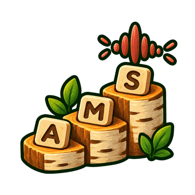

Ljodstigen
Frå éin bokstavlyd til heile setningar — ti steg i ditt eige tempo.

Mose
Kva vil du spele?
Kvar bokstav er eit tre. Di betre du kan han, di større veks det. Trea visnar aldri.

Frå éin bokstavlyd til heile setningar — ti steg i ditt eige tempo.
Kvar bokstav er eit tre. Di betre du kan han, di større veks det. Trea visnar aldri.